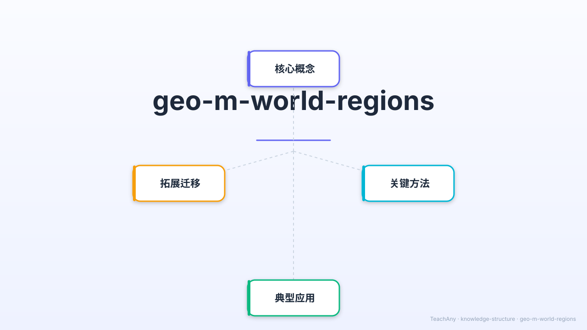

地球上的土地按地理位置、自然环境和人文特征划分为不同区域——
让我们一起探索七大洲的地理秘密。

📌 学习目标
对应 2022 初中地理课标 · 七年级下
说出世界地理分区的主要划分依据（位置、地形、气候、人文）
在地图上指出亚洲、欧洲、非洲、北美洲、南美洲、大洋洲、南极洲的位置
从自然环境与人文特征两方面比较不同地理区域的主要差异
了解世界发达地区与发展中地区的分布规律，说出中国所处区域的特征
点击时代按钮切换疆域版图；悬停高亮边界；点击红色城市标记查看详情。
🎯 情境引入
用 ABT 框架建立学习动机
🌐 分区总览
按地理位置划分，每块区域各有特色
位于东半球东北部，地跨寒、温、热三带。人口最多，约占世界总人口的 60%。
位于亚欧大陆西部，海岸线曲折，温带海洋性气候为主，发达国家高度集中。
赤道横贯中部，气候以热带为主。撒哈拉沙漠是世界最大沙漠，尼罗河是最长河流。
包含美国、加拿大、墨西哥等国。西部有落基山脉，东部有阿巴拉契亚山脉。
西部安第斯山脉纵贯南北，东部亚马孙平原拥有地球最大热带雨林，巴西是最大国。
以澳大利亚为核心，加上太平洋众多岛国。澳大利亚和新西兰是发达国家。
地球最南端，平均气温 -50°C，是世界上最寒冷的大陆，无常住居民，有科考站。
🎬 教学动画
5 个场景 · 22 秒 · 带语音旁白 · 包含面积比较动画和发展差异对比
🗺️ 互动地图
点击国家查看所属分区 · 滚轮缩放 · 拖拽移动
💡 点击任意国家查看名称和所属洲 · 可拖动 / 滚轮缩放 · 右上角可切换颜色模式
🎛️ 数据探索
拖动滑块 · 切换维度 · 发现规律
选择查看维度，滑动鼠标悬停在柱子上查看详细数据；点击柱子高亮该洲的分区卡片。
🌏 深入·亚洲
亚洲面积最大、内部差异最显著
亚欧大陆东部，太平洋西岸。季风气候显著，四季分明。
热带季风和热带雨林气候，物产丰富，"香料群岛"。
喜马拉雅山以南，印度次大陆，热带季风气候。
干旱少雨，热带沙漠气候为主，全球最重要的石油产地。
深居大陆内部，温带大陆性气候，干旱少雨，草原广阔。
主要指西伯利亚地区，属俄罗斯，寒冷苦寒，针叶林广布。
🌍 欧洲 · 非洲
一个以温带为主，一个以热带为主
欧洲三面环海，海岸线极为曲折。温带海洋性气候在西欧广泛分布，地中海气候分布在南欧。工业革命发源地，现代化程度高。
非洲大陆横跨赤道，气候以热带为主，从赤道向南北两侧依次为热带雨林→热带草原→热带沙漠→地中海气候，呈南北对称分布。
🌎 美洲 · 大洋洲
跨越两半球的美洲和太平洋上的大洋洲
以巴拿马地峡为界，北美洲包含美国、加拿大、墨西哥和中美洲国家。西部有落基山脉，东部有阿巴拉契亚山脉，中部密西西比平原。
南美洲西部是安第斯山脉，东部是亚马孙平原，拥有地球 40% 的热带雨林。巴西面积最大，讲葡萄牙语；其他大部分国家讲西班牙语。
大洋洲以澳大利亚为主体，另有新西兰和太平洋众多岛国。澳大利亚是最小洲中最大的国家，是发达国家，以采矿和畜牧业著称。
地球最南端，平均气温最低，98% 被冰川覆盖。无固定居民，各国设有科学考察站。中国建有长城站、中山站。
📈 发展差异
世界按经济发展水平划分的两大阵营
🎯 互动练习一
拖拽下方国家到正确的大洲分区 · 全对得 ⭐
📝 知识检测
点击选项作答，查看详细解析
📋 综合比较
关键特征一览
| 大洲 | 面积（万km²） | 主要气候 | 代表国家 | 发展特征 |
|---|---|---|---|---|
| 亚洲 | 4,400 | 季风、大陆性、热带沙漠 | 中国、印度、日本 | 差异极大，日本发达 |
| 欧洲 | 1,018 | 温带海洋性、地中海 | 英国、法国、德国 | 整体发达，水平最高 |
| 非洲 | 3,020 | 热带为主（三带对称） | 埃及、南非、尼日利亚 | 发展中，资源丰富 |
| 北美洲 | 2,422 | 温带大陆性为主 | 美国、加拿大、墨西哥 | 美加发达，墨西哥发展中 |
| 南美洲 | 1,797 | 热带雨林、热带草原 | 巴西、阿根廷、智利 | 发展中，资源丰富 |
| 大洋洲 | 897 | 热带、温带（多样） | 澳大利亚、新西兰 | 澳新发达 |
| 南极洲 | 1,390 | 极地（最冷） | 无固定居民 | 无居民，科考站 |
🎯 课程小结
用四个关键词串起全课知识
地理位置·地形地势·气候类型·人文特征
亚·欧·非·北美·南美·大洋·南极
（按面积从大到小）
东/东南/南/西/中/北亚
各有独特气候与文化
北方发达国家
南方发展中国家